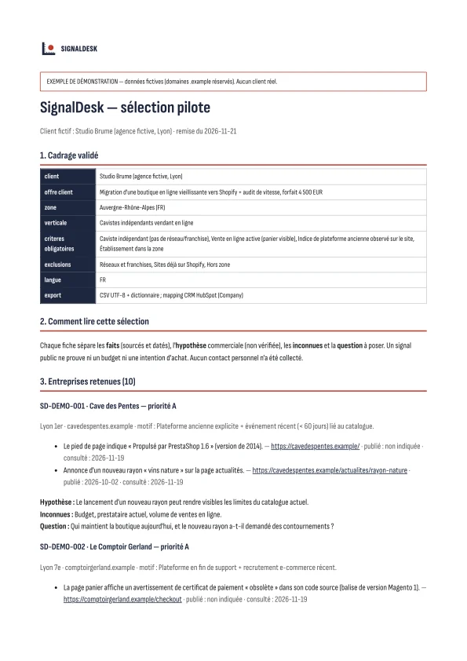

Know who to contact, and why — with the evidence.
For small B2B agencies with a clear offer: a shortlist of companies qualified against your criteria, every reason sourced and dated, and outreach briefs you can stand behind.
Pilot: USD 290. Published prices, written quote before any payment.



The sample pilot report: scope, 10 sourced records, 2 briefs, rejected list, corrections.
The full sample
A real deliverable, produced on fictional data (invented companies and .example domains). No real client.
The downloadable files are in French (the demo client is French); the same structure is delivered in English.
| Company | Observed fact and source | Hypothesis, to check | Question to ask |
|---|---|---|---|
| Cave des PentesLyon 1er | Footer reads “Powered by PrestaShop 1.6” (a 2014 release).cavedespentes.example, checked 2026-11-19 | The new “natural wines” section may expose the catalogue’s limits. | Who maintains the shop today? |
| Le Comptoir GerlandLyon 7e | Job ad “shop and e-commerce manager”, posted 2026-11-04.comptoirgerland.example/recrutement, checked 2026-11-19 | Online sales are becoming a priority. | Will the new manager choose the platform? |
| La Grappe d’AnnecyAnnecy | Blog post: second shop opening in Talloires (2026-09-15).grappe-annecy.example/blog/talloires, checked 2026-11-19 | Multi-site stock will need syncing. | Will both shops' stock be synced? |
The files, as delivered
What you receive
Options, quoted separately. Other region or vertical, extra briefs, another language, a second CRM format, a dated refresh. Ongoing monitoring and sending messages are not included.
- Written scope: region, vertical, must-have criteria, exclusions — approved by you
- Sourced records: every fact with the exact URL, its publication date when shown and our consultation date
- Facts, hypotheses, unknowns and the question to ask kept visibly separate
- A/B/C priority with its reason — no invented “likelihood score”
- Briefs: sourced context, link to your offer, angle, limit, short draft (not sent)
- UTF-8 CSV + column dictionary + mapping to your CRM
- Rejected list (duplicates, exclusions, unconfirmed) and correction log
Price
Card payment via Stripe, only after your brief is reviewed and a quote is posted in your project page. Nothing is charged when you send a brief.
Pilot
USD 290
10 qualified companies + 2 outreach briefs. 100% credited to the package if ordered within 30 days.
Turnaround: 5 business days after the scope is approved
Choose: pilotPackage
USD 1,450
50 qualified companies + 10 briefs, one vertical, one region, one offer.
Turnaround: 10 business days after a sample is approved
Choose: packageHow an order runs
- 1Online brief and any questions
- 2Quote and written scope in your project page
- 3Payment
- 4Sample records to approve (package)
- 5Production, check of every record and brief
- 6Delivery + 14-day feedback window
What we need from you
- Your offer and its indicative price
- Region, vertical, must-have criteria and exclusions
- 2–3 examples of ideal and rejected clients
- Your preferred export (CRM)
What we do not promise
No meetings, reply rate or revenue guaranteed. A public signal is not buying intent. We do not collect personal contact details. If the segment has too few matching companies, we reduce the batch and the price rather than pad it.
14-day feedback window after delivery. Acknowledgement within 2 business days (UTC). Our mistakes are fixed at no cost; a new target or a new request gets a separate quote.
AI and human review
AI models help prepare drafts. Every delivered item is checked by a person, and fact, amount and file checks run as deterministic scripts — not by AI. Your project data is not sent to any third-party AI service.
FAQ
Do sources stay valid?
They are checked and dated before delivery; a page can change later. A link that is down at delivery is flagged and the record replaced.
Do you send the messages?
No. Drafts are for you to adapt and send, following your channel’s rules.
What if a record does not meet the scope?
It is fixed or replaced within the feedback window. A prospect not replying is not a qualification defect.
Know who to contact, and why — with the evidence.
A brief is all it takes to start. Nothing is charged before you accept the quote.